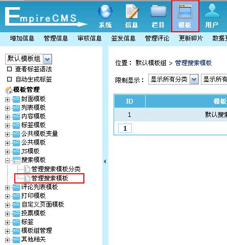

| 管理搜索模板 |
| 1、登录后台，单击“模板”菜单，选择“管理搜索模板”子菜单，进入管理搜索模板界面： |
|  |
| 2、进入管理搜索模板界面：(蓝色背景为默认模板) |
|
| 3、点击“修改”进入修改搜索模板界面： |
| 模板名 |
填写模板名称。 |
| 所属系统模型 |
指这个搜索模板用于的系统模型 |
| 所属分类 |
方便统一按分类管理。 |
| 简介截取字数 |
针对字段设置为简介字段的内容截取设置，0为不截取 |
| 标题截取字数 |
可设置截取标题的前多少字，0为不截取 |
| 每次显示 |
是指每次循环记录数。一般不用设置，默认自动识别。 |
| 时间显示格式 |
设置newstime发布时间字段的时间格式，如“Y-m-d”就是显示“2008-08-08” |
| 页面模板内容 |
整体页面的列表模板代码。 |
| 列表内容模板(list.var) |
列表内容模板代码，即＂页面模板内容＂中＂<!--list.var*-->＂变量显示的内容格式。 |
| |
使用程序代码：声明list.var模板要使用程序代码，使用方法可点击这里。
（如果启用支持程序代码，则list.var的模板内容都要用php代码表示，不能用html表示。且要将最终模板内容赋给$listtemp变量）
|
|
| 4、搜索模板支持的变量： |
(1)、页面模板内容支持的变量
| [!--newsnav--]:导航条 |
[!--class.menu--]：一级栏目导航 |
[!--keyboard--]:关键字 |
| [!--pagetitle--]:页面标题 |
[!--pagekey--]：页面关键字 |
[!--pagedes--]：页面描述 |
| [!--ecms.num--]:总记录数 |
[!--show.page--]:分页导行 |
|
| 支持公共模板变量 |
|
|
(2)、列表内容模板(list.var)支持的变量
| [!--id--]:信息ID |
[!--titleurl--]:标题链接 |
[!--oldtitle--]:标题ALT(不截取字符) |
| [!--classid--]:栏目ID |
[!--class.name--]:栏目名称(带链接) |
[!--this.classname--]:栏目名称(不带链接) |
| [!--this.classlink--]:栏目地址 |
[!--news.url--]:网站地址(参数设置的站点地址) |
[!--no.num--]:信息编号 |
| [!--userid--]:发布者ID |
[!--username--]:发布者 |
[!--userfen--]:查看信息扣除点数 |
| [!--onclick--]:点击数 |
[!--totaldown--]:下载数 |
[!--plnum--]:评论数 |
| [!--ttid--]：标题分类ID |
[!--tt.name--]：标题分类名称 |
|
| [!--字段名--]:数据表字段内容调用 |
|
|
|
| 5、把“页面模板内容”复制到Dreamweaver进行可视化编辑，如下图： |
图1：设计视图
图2： 代码模式
|
| 6、把“列表内容模板(list.var)”复制到Dreamweaver进行可视化编辑，如下图： |
|
| 7、修改模板后，复制页面的代码到后台的模板内容文本框，然后点击“修改”即可修改完毕。 |